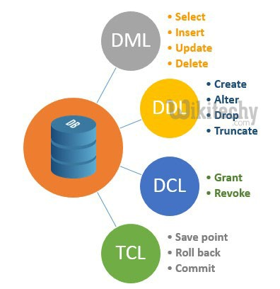

Lenguaje de Programación SQL-T-SQL
DCL
Un Lenguaje de Control de Datos (DCL por sus siglas en inglés: Data Control Language) es un lenguaje proporcionado por el Sistema de Gestión de Base de Datos que incluye una serie de comandos SQL que permiten al administrador controlar el acceso a los datos contenidos en la Base de Datos.
DML
Lenguaje de Manipulación de Datos (Data Manipulation Language, DML) es un lenguaje proporcionado por los sistemas gestores de bases de datos que permite a los usuarios de la misma llevar a cabo las tareas de consulta o modificación de los datos contenidos en las Bases de Datos del Sistema Gestor de Bases de Datos.
DDL
Un lenguaje de base de datos o lenguaje de definición de datos (Data Definition Language, DDL por sus siglas en inglés) es un lenguaje proporcionado por el sistema de gestión de base de datos que permite a los programadores de la misma llevar a cabo las tareas de definición de las estructuras que almacenarán los datos, así como de los procedimientos o funciones que permitan consultarlos.
